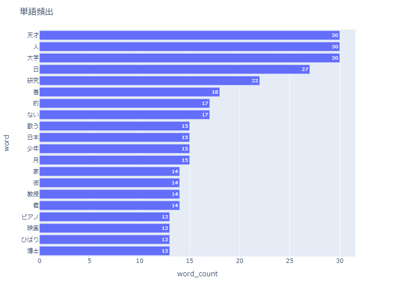
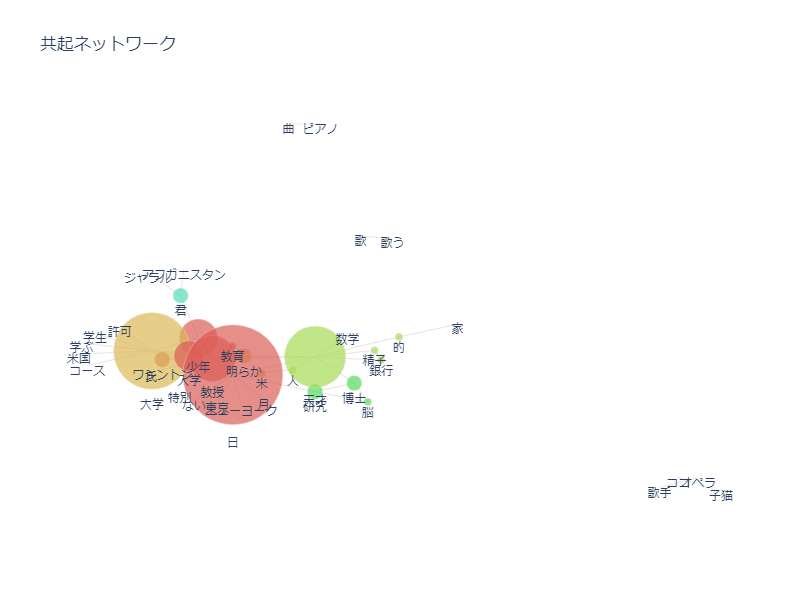
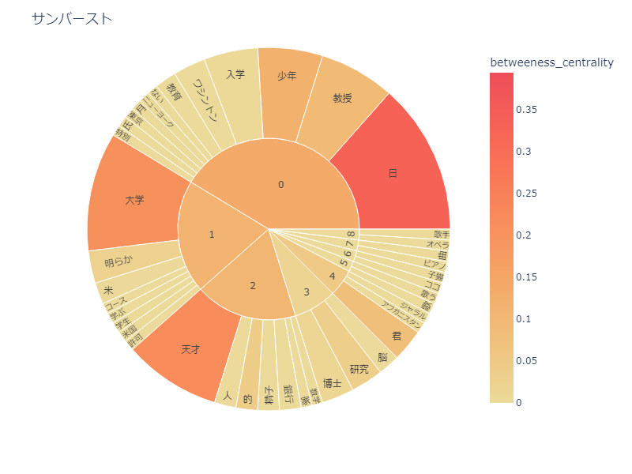
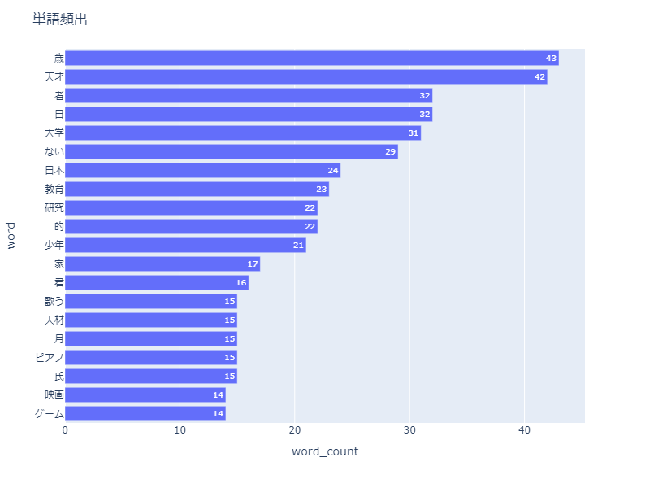
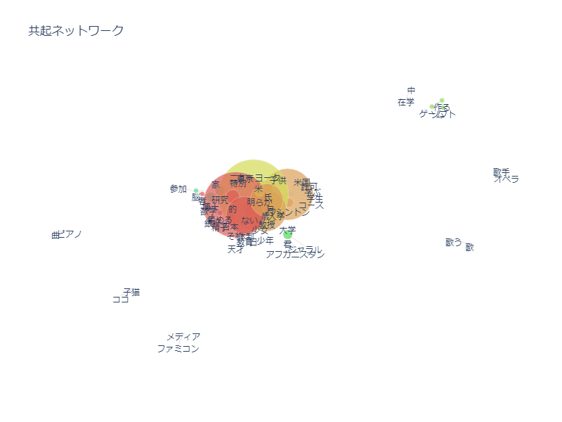
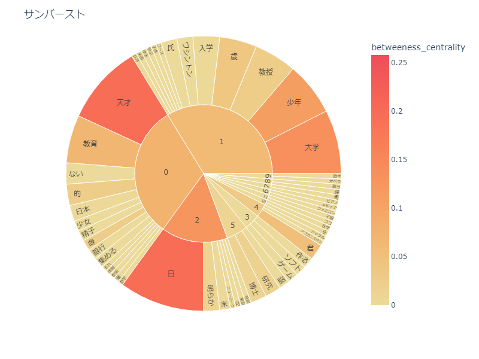

XBP_HPsample

昔の天才と今の天才
昔の天才↓↓↓↓↓↓



今の天才↓↓↓↓↓↓



考察
昔と今の天才をデータを見て比較してみたところ、現在の方がゲームの単語がでてきていいたり
今の天才の共起ネットワークのデータのところを見ると昔より黄緑色の円が大きくなっていたり
とデータを見て読み取れる。一方で、単語は昔と今であまり変わっていまいと言うふうに感じました。
今回は天才をテーマにしてやってみましたが、いまいち昔と今の天才を比較するのは難しかったです。